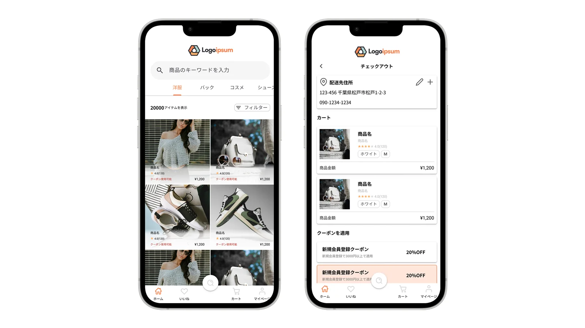

一概要
ユーザーが迷わず商品を選択し、スムーズに購入まで進める体験を目的に設計したECアプリのUIデザインです。商品探索から購入完了までの一連の導線を意識し、認知負荷を抑えた情報設計を行いました。
二課題
既存のECアプリにおいて、以下のような課題があると考えました。
- 商品情報が多く、ユーザーが比較・判断しづらい
- 購入フローにおいて、どのように進めばよいか分かりにくい
- 価格や評価、特典などの重要情報が埋もれてしまい、意思決定に時間がかかる
これらの課題を解決し、「迷わず選べる・スムーズに購入できる体験」の実現を目指しました。
三ユーザーフロー
商品一覧 → 商品選択 → カート → チェックアウト → 購入完了
ユーザーが直感的に操作できるよう、各ステップでの情報量と導線を最適化しています。
四画面設計

商品一覧画面
商品画像を大きく配置し、視認性を高めています。価格・評価といった意思決定に必要な情報を優先的に表示し、ユーザーが比較しやすい構成としました。
また、カテゴリ切り替えや検索機能を上部に配置し、商品探索のしやすさを向上させています。
フィルター・検索
ユーザーが目的の商品に素早くたどり着けるよう、フィルター機能を設置。検索・カテゴリ・フィルターを組み合わせることで、効率的な商品探索を可能にしています。
カート・チェックアウト画面
「配送先 → 商品確認 → クーポン適用 → 支払い」の順で情報を整理し、ユーザーが迷わず購入手続きを進められる構成としました。
クーポン適用による価格変動を視覚的に分かりやすく表示することで、ユーザーの納得感を高めています。また、最終的な支払い金額を明確に提示することで、不安の軽減を意識しています。
五工夫したポイント
- ユーザーの意思決定に必要な情報を優先的に配置
- 視線の流れを意識したレイアウト設計
- 購入までの導線をシンプルに設計し、迷いを減らすUI
- 価格やクーポンなどの変化を視覚的に分かりやすく表現
六今後の改善案
- 人気商品やセール情報の可視化による選択のしやすさ向上
- 在庫状況や特典表示など、購入を後押しする情報の追加
- スクロール時の負担軽減のためのナビゲーション改善